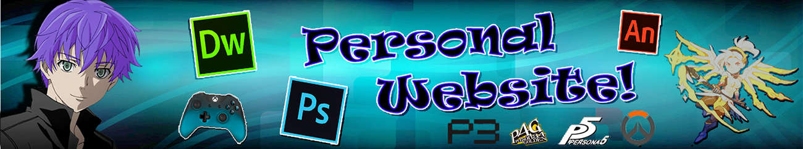

Family
Family Spotlight
Spotlight Career
Career Review
Review Survey
Survey Favorites
Cause
Favorites
Cause

Listening to music is easily a thing I do 90% of the time. Be it I'm not doing anything, or I am doing something but I need to focus, there's a good chance that I'm going to be listening to music.
Some of my favorite tracks include:
While it's technically a series of 4 movies, they're all based off of the same game: Shin Megami Tensei: Persona 3. The story follows Makoto Yuki, a high school student who lost his parents in an accident 10 years ago, who learns there is a period of time hidden between one day and the next. This period is known as the Dark Hour, a time when monsters called Shadows appear. He soon learns how to fight against Shadows that threaten the world from the tower of Tartarus, the place where the Shadows normally reside.
There are so many things I love about this movie, most of which I won't go too in depth about, but I can give a brief explanation for. The first thing being the animation. You can actually see the characters in high quality, whereas you couldn't in the game as it was slightly older. Another aspect I like is the depiction of characters in situations that would make sense for them, to flesh them out in a unique way that we didn't see in the game. the only real "dislike" I have about the movies is that the story had to be cut in many ways that lots some of the original feel that we felt in the game.
Overwatch is a team-based multiplayer first-person shooter developed and published by Blizzard Entertainment. It was released on May 24, 2016 for PlayStation 4, Xbox One, and Windows. In every game, players into two teams of six, with each player selecting from a roster of 30 heroes in one of three classes: Healers, DPS, and Tanks. Every character also has their own unique set of abilities, giving the player a different experience for each character they play.


It's no secret aming my friends that I love biking. Any chance I get I will go for a quick ride either to go somewhere, get something done, or even just for recreation. Fun fact: The most bike rides I've went on in one day is 6 (at the time of me writing this at least). This activity of mine has actually started a... unique joke within my friend group. Because I bike so much, my calf muscles have become very well-defined, so my friends joke about me having "turtles for legs". (I don't get it either. Just go with it).
I am very much open about my opinion on coffee. I love the stuff. Ask any of my friends and they will tell you just how much I love coffee, and how often I make that fact clear.